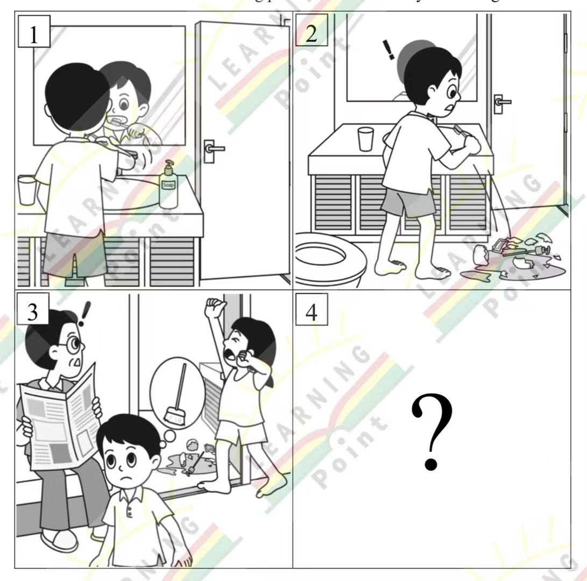
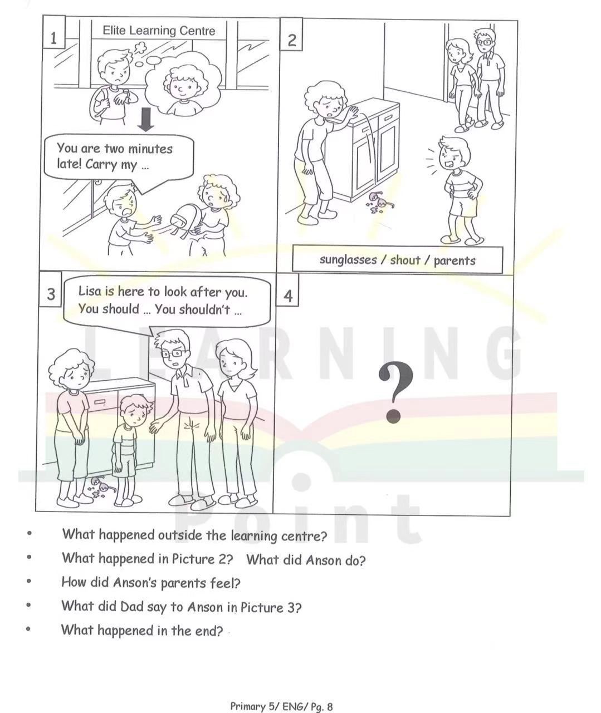
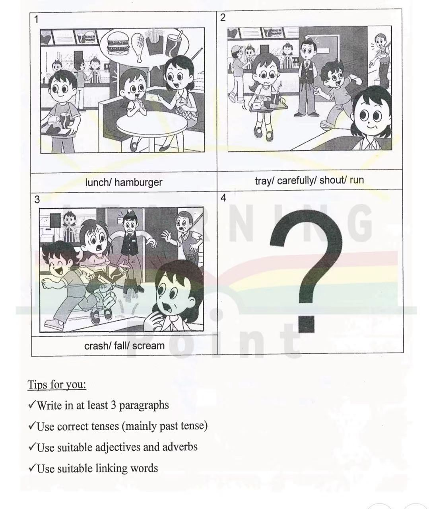
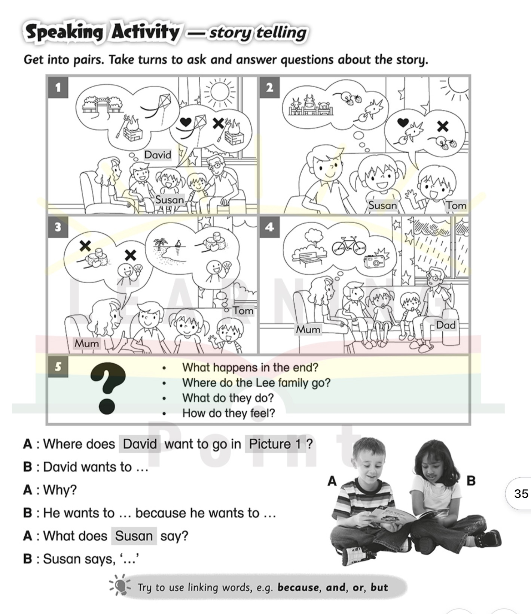

My name is Wu Ruoyang. My English name is WRyan. You can call me WRyan if you wish.
2. How old are you?
I am nine years old.
3. Where do you study now? / Which school do you go to?
I study at Hanlin Primary School. I am in Grade Three.
4. Do you have a nickname? / What can I call you?
My nickname is Qiqi.
二、家庭与生活
1. How many people are there in your family?
There are four people in my family: my dad, my mum, my brother, and me.
2. Who takes care of your studies at home? / Who helps you with your homework?
My parents help me with my homework.
3. What do you like to do with your family on weekends?
I like to watch TV with my family on weekends.
4. What did you do last Sunday?
Last Sunday, I went to the park with my family. We flew a kite and had a picnic. I played on the slide, and it was a lot of fun.
5. What do you do with your brother?
My brother and I like to play basketball together on weekends. Sometimes, we also watch cartoons and laugh a lot.
三、兴趣与爱好
1. What is your hobby? / What do you like to do in your free time?
My hobby is riding a bike.
2. Do you like sports? / What sport do you like?
I like swimming because swimming is good for my health.
3. Do you like drawing / singing / dancing?
I like drawing, but I don't like singing or dancing.
4. What is your favorite toy? Why?
My favorite toy is my toy car because it is my birthday gift.
5. What is your favourite season? Why?
My favourite season is summer. I like it because the weather is hot and sunny. I can go swimming with my dad, and I can eat ice cream.
6. What is your favourite food?
My favourite food is pizza. I like it because it is cheesy and yummy. I usually eat it with my friends on weekends.
四、学习与阅读
1. What is your favorite subject? Why?
My favorite subject is English because English is useful. We can talk to people around the world in English.
2. Do you like reading?
Yes, I do. My favorite book is Journey to the West.
3. What is your favorite book?
My favorite book is Journey to the West. The Monkey King fights monsters. He is very brave. I like him very much.
五、学校与朋友
1. Why would you choose our school?
I want to come to your school because it is very famous. I love reading, and I know that your school has a big library. I will study hard and be a good student here.
2. What do you do during recess?
During recess, I like to go to the library or stay in the classroom. I read storybooks or draw pictures with my friends. Both places are quiet, and I feel relaxed there.
3. Who is your best friend? Why do you like him?
My best friend is Peter. He is very kind and friendly. I like him because we always play football together at recess. He also helps me when I have problems.
六、品格与情景应对
1. If you see a classmate fall down on the playground, what will you do?
If I see a classmate fall down, I will run over to help. I will ask, "Are you OK?" Then I will tell the teacher.
英文面试 · 看图说话 · 老师版
看图说话 1
姓名：________________ 日期：________________
Look at the pictures and tell the story. What happens in Picture 4?

参考讲述 · 看图说话 1
看图说话没有唯一答案；可按图片内容合理想象。
Picture 1: It is morning. The boy is brushing his teeth in the bathroom.
Picture 2: He makes a big mess. There is water and rubbish all over the floor.
Picture 3: His mother walks in and is shocked and angry. She tells him to clean up the mess.
Picture 4: The boy uses a broom to sweep up the rubbish and a mop to clean the wet floor. He says sorry to his mum. His mum is no longer angry and smiles.
英文面试 · 看图说话 · 老师版
看图说话 2
姓名：________________ 日期：________________
Look at the pictures and answer the five questions below. Then tell the story and complete Picture 4.

参考讲述 · 看图说话 2
看图说话没有唯一答案；可按图片内容合理想象。
Picture 1: After class, Anson waited outside the Elite Learning Centre for Lisa. Lisa was two minutes late, so Anson became impatient. He rudely told her to carry his schoolbag.
Picture 2: Later, a pair of sunglasses fell onto the floor and broke. Anson became angry and shouted at Lisa. His parents heard him and came over. They were shocked and disappointed.
Picture 3: Anson's dad said, "Lisa is here to look after you. You should be polite to her. You shouldn't shout at her."
Picture 4: In the end, Anson realised that he was wrong. He apologised to Lisa and promised not to be rude again. Lisa forgave him, and his parents were pleased that he had learnt to respect others.
英文面试 · 看图说话 · 老师版
看图说话 3
姓名：________________ 日期：________________
Look at the pictures and tell the story in at least three paragraphs. What happens in Picture 4?

参考讲述 · 看图说话 3
看图说话没有唯一答案；可按图片内容合理想象。
Picture 1: It was lunchtime at a busy fast-food restaurant. A boy bought a hamburger and a drink. He carried the tray carefully towards his table.
Picture 2: Suddenly, another boy ran through the restaurant and shouted loudly. He did not look where he was going.
Picture 3: The running boy crashed into the boy carrying the tray. The boy with the tray fell to the floor and screamed. His food and drink spilled everywhere, and the people nearby were shocked.
Picture 4: The running boy immediately stopped and helped the other boy up. He apologised sincerely and helped clean up the mess. Luckily, the boy with the tray was not badly hurt and forgave him. The running boy promised that he would never run in a restaurant again.
英文面试 · 看图说话 · 老师版
看图说话 4
姓名：________________ 日期：________________
Look at the pictures and tell the story. What happens in the end? Where do the Lee family go? What do they do? How do they feel?

参考讲述 · 看图说话 4
看图说话没有唯一答案；可按图片内容合理想象。
Picture 1: The Lee family are at home and they are talking about where to go. David wants to go to the park because he wants to fly a kite. Susan likes flying a kite too, but she does not want to have a barbecue.
Picture 2: Susan and Tom share their ideas. They think about fun places and toys, but they do not agree on everything.
Picture 3: Mum listens to the children. Some ideas are too noisy or not suitable, so the family keep thinking together.
Picture 4: Dad looks out of the window and sees that it is raining. They cannot play outside, so they decide to choose an indoor activity instead.
In the end: The Lee family go to an indoor playground. They play games, take photos, and spend a happy afternoon together. They feel excited and warm because everyone has a good time.
英文面试 · 看图说话 · 老师版
看图说话 5 · Roy and the Angry Whale
姓名：________________ 日期：________________
Look at the pictures and tell a story about Roy and the angry whale. Think of an ending.
Words you may use: threw rubbish · blamed · sunbathing · beach · wore sunglasses · hit his fin · was hurt badly · was frightened · said sorry · was only a dream · promised · be good to the ocean
参考讲述 · Roy and the Angry Whale
以下为一种可能的讲述，结局可合理想象。
One day, Roy threw some rubbish into the sea. Later, he went to the beach, put on his sunglasses and fell asleep in the sun. An angry whale appeared. Its fin was hurt, and Roy was frightened. The whale showed Roy that the rubbish had hurt it. Roy realised that throwing rubbish into the sea could harm sea animals.
Possible ending (one example): Roy suddenly woke up and realised it was only a dream. He picked up the rubbish on the beach and promised to keep the sea clean.
口头提问 · Roy and the Angry Whale
请在学生完成朗读或讲述后逐题提问，不提前展示问题。
What did Roy do at the beginning?
He threw rubbish into the sea.
How did Roy feel when he saw the whale?
He felt frightened.
Why was the whale angry?
The rubbish had hurt its fin.
What could Roy do next?
Accept a sensible ending, such as saying sorry, clearing up rubbish and promising to protect the sea.
Sample story only. There is no single correct answer. Accept a sensible story and a reasonable ending.
英文面试 · 看图说话 · 老师版
看图说话 6 · Alan Helps Cook Dinner
姓名：________________ 日期：________________
Look at the pictures and tell a story about Alan and his family. Think of an ending.
参考讲述 · Alan Helps Cook Dinner
以下为一种可能的讲述，结局可合理想象。
Alan and his father were in the kitchen. Alan's mother was busy working, so they prepared dinner together. Alan helped wash the vegetables while his father cooked. Later, the family sat down to eat. They opened the rice cooker and found that it was empty. They had forgotten to cook the rice, so they were surprised.
Possible ending (one example): They decided to cook some noodles instead. Everyone helped, and soon they enjoyed a warm meal together. They laughed about their mistake and promised to check everything next time.
口头提问 · Alan Helps Cook Dinner
请在学生完成朗读或讲述后逐题提问，不提前展示问题。
Where were Alan and his father?
They were in the kitchen.
How did Alan help?
He helped wash the vegetables.
What problem did the family find at dinner?
They found that they had forgotten to cook the rice.
What could the family do next?
Accept a sensible ending, such as cooking rice or noodles, or eating another suitable meal.
Sample story only. There is no single correct answer. Accept a sensible story and a reasonable ending.
英文面试 · 看图说话 · 老师版
看图说话 7 · Kelly Goes Ice-skating
姓名：________________ 日期：________________
Kelly is Jacky's sister. Yesterday, she went ice-skating and broke her leg. You are Kelly. Look at the pictures and tell the story. Think of an ending.
参考讲述 · Kelly Goes Ice-skating
以下为一种可能的讲述，结局可合理想象。
Yesterday, I went ice-skating with my friend Lucy. We skated together at first. Then Lucy moved ahead, so I called, 'Lucy, wait!' Two boys nearby were talking and not looking where they were going. One of them bumped into me, and I lost my balance. I fell and broke my leg.
Possible ending (one example): Lucy quickly asked a member of staff for help. I was taken to hospital, where a doctor treated my leg. The boy said sorry. I hoped everyone would be more careful at the rink.
口头提问 · Kelly Goes Ice-skating
请在学生完成朗读或讲述后逐题提问，不提前展示问题。
Who went skating with Kelly?
Lucy went skating with her.
Why did Kelly call Lucy?
Lucy had moved ahead, and Kelly wanted her to wait.
What caused the accident?
A boy bumped into Kelly.
What should the people nearby do?
They should get help from an adult or a member of staff.
Sample story only. There is no single correct answer. Accept a sensible story and a reasonable ending. The original introduction states that Kelly broke her leg. The hospital ending is a suggested continuation.
英文面试 · 看图说话 · 老师版
看图说话 8 · Albert Goes to the Cinema
姓名：________________ 日期：________________
Albert went to the cinema this afternoon. You are Albert. Look at the pictures and tell the story. Think of an ending.
参考讲述 · Albert Goes to the Cinema
以下为一种可能的讲述，结局可合理想象。
This afternoon, I went to the cinema with Aunt Karen to watch Super Joe. We arrived at three o'clock, but there was a long queue at the ticket counter. We waited until four o'clock. Then Aunt Karen bought some popcorn and drinks. During the film, I suddenly felt unwell and held my stomach.
Possible ending (one example): I told Aunt Karen that I had a stomach ache. She took me outside to rest and asked a member of staff for help. I felt better after a while, but we decided to go home.
口头提问 · Albert Goes to the Cinema
请在学生完成朗读或讲述后逐题提问，不提前展示问题。
Who went to the cinema with Albert?
Aunt Karen went with him.
Which film did they watch?
They watched Super Joe.
How long did they wait at the ticket counter?
They waited for one hour, from three o'clock to four o'clock.
What did they buy at the snack counter?
They bought popcorn and drinks.
How did Albert feel during the film?
He felt unwell and seemed to have a stomach ache.
What could Aunt Karen do next?
Accept a reasonable ending, such as helping Albert, taking him to rest or getting adult/medical assistance if needed.
Sample story only. There is no single correct answer. Accept a sensible story and a reasonable ending. Both clocks show a one-hour wait, from 3:00 to 4:00. The cause of Albert's discomfort is not stated.
英文面试 · 朗读后回答问题 · 老师版
朗读 1 · Happy Primary School
姓名：________________ 日期：________________
Read the passage aloud. Then listen to the examiner and answer the questions orally.
7th January, 2012
Dear parents,
A programme to promote healthy eating will be started this month. We will check the list of the meals from the school's food producer. We hope that lunch boxes in this year have more healthy ingredients than those in the previous years. We would like to encourage students to pay more attention to what they eat.
Both students and parents have to know the importance of eating healthily. A lot of people think that healthy food doesn't taste good, so they choose to have fast food. However, having healthy eating habits can make us stronger. Therefore, we should encourage our students to build up healthy eating habits.
I hope you can prepare some healthy food at home as well. Let's create healthy eating habits with students together!
Yours sincerely,
Andy Wong
Principal, Andy Wong
口头提问 · Happy Primary School
请在学生完成朗读或讲述后逐题提问，不提前展示问题。
Who wrote the school notice?
Principal Andy Wong wrote the school notice.
What is the name of the school?
The school is called Happy Primary School.
Why do people choose to have fast food?
They choose to have fast food because they think healthy food doesn't taste good.
In the sentence 'I hope you can prepare some healthy food at home as well', who does 'you' refer to?
'You' refers to the parents.
Do you have healthy eating habits? Why do you think so?
Yes, I do. I eat fruit and vegetables every day, and I drink plenty of water.
Let the student read the passage aloud first. Keep these questions out of the student's view, then ask them orally. Reference answers are for the examiner. Accept equivalent answers in the student's own words. Question 5 is a personal response; the sample does not describe the student's actual habits.
英文面试 · 朗读后回答问题 · 老师版
朗读 2 · Choir Practice
姓名：________________ 日期：________________
Read the passage aloud. Then listen to the examiner and answer the questions orally.
Dear choir members,
Choir practice will be on Fridays this term. Please come to the school hall, not the music room, at 3:15pm. We will practise songs from the musical The Sound of Music. Miss Cheung will play the piano for us.
There will be a concert at the end of the term on 16 December at City Hall. You must wear a white shirt and a black skirt or black trousers to the concert. Don't forget to put the date down in your diary!
Miss Choi
口头提问 · Choir Practice
请在学生完成朗读或讲述后逐题提问，不提前展示问题。
Who would read the notice?
Students in the choir would read the notice.
When will the choir practice be?
It will be on Friday afternoons at 3:15.
Where will the choir practice be?
It will be in the school hall.
Should students wear white trousers to the concert? Why or why not?
They should not wear white trousers. They must wear a white shirt and a black skirt or black trousers.
Let the student read the passage aloud first. Keep these questions out of the student's view, then ask them orally. Reference answers are for the examiner. Accept equivalent answers in the student's own words. Question 4 is adapted from the original multiple-choice item for oral use.
英文面试 · 朗读后回答问题 · 老师版
朗读 3 · Angel's Blog
姓名：________________ 日期：________________
Read the passage aloud. Then listen to the examiner and answer the questions orally.
Our class went on a short trip to the Sunny Island Holiday Village on Cheung Chau Island last weekend. I arrived at the ferry pier in Central at eight thirty in the morning. When Miss Ho and all my classmates turned up at nine, we got on the ferry. The ferry ride was nice. It took about half an hour to reach the island.
As soon as we got off the ferry, I saw a girl who was wearing a beautiful red dress and a hat. It was Angie, my cousin! What a surprise to run into her! She was there with my uncle and aunt to enjoy a relaxing holiday. Since the weather was hot and there was no shelter along the way, our class went by bus to the holiday village.
When we arrived, Miss Chan led us to the activity room and put us into groups. Miss Chan gave us our room keys. We put our bags into our rooms and went back to the activity room. Then we started to play some group games. Miss Chan wanted us to learn the importance of teamwork, so we played games like tug-of-war and did a three-legged race. After that, we had some free time to enjoy the facilities in the holiday village. I played mini-golf and went bowling with my friends. Before we left, we took a class photo with Miss Chan. It was a wonderful trip and I am already looking forward to another school trip!
口头提问 · Angel's Blog
请在学生完成朗读或讲述后逐题提问，不提前展示问题。
Where did Angel and her classmates meet?
They met at the ferry pier in Central.
What time did Angel's class arrive on the island?
They arrived at about half past nine in the morning.
Who did Angel meet on the pier in Cheung Chau?
She met her cousin Angie.
Why did Angel's class take a bus to the holiday village?
They took a bus because it was hot and there was no shelter along the way.
What did Angel's class learn from the group games and activities?
They learnt the importance of teamwork.
What did Angel's class do before they left?
They took a class photo with Miss Chan.
Let the student read the passage aloud first. Keep these questions out of the student's view, then ask them orally. Reference answers are for the examiner. Accept equivalent answers in the student's own words. The arrival time is about 9:30 a.m.: 9:00 departure plus about half an hour. Miss Ho and Miss Chan are both retained as printed.